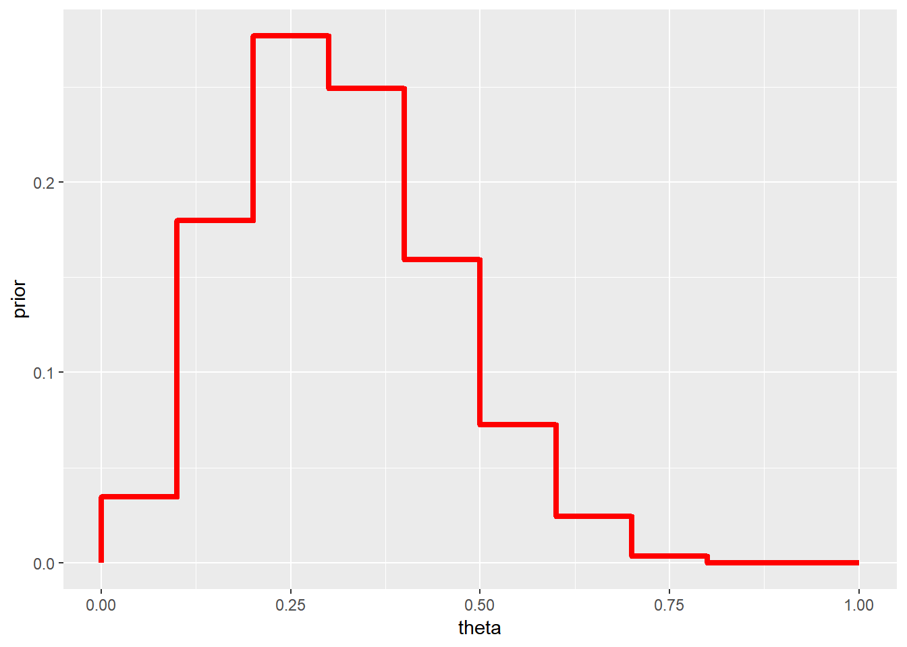

3 Introdução à Inferência Bayesiana
3.1 Conceitos Básicos
Inferência Estatística: fazer afirmações sobre quantidades não observáveis em um determinado contexto.
\(\theta\) : parâmetro - quantidade desconhecida de interesse (não-observável em determinado contexto).
\(\Theta\) : espaço paramétrico - conjunto onde \(\theta\) toma valores (supostamente conhecido).
\(E=\left(\boldsymbol X, \theta, \left\{f(\boldsymbol x|\theta)\right\}\right)\): experimento - “tornar visível algo que antes era invisível” ou, mais especificamente no nosso contexto, observar uma realização \(\boldsymbol x \in \mathfrak{X}\) de um vetor aleatório \(\boldsymbol X\) com alguma distribuição \(f(\boldsymbol x|\theta)\). Essa distribuição pertence, na maioria dos casos, à uma família de distribuições fixada mas que depende do parâmetro desconhecido de interesse \(\theta\). Note que na grande maioria dos problemas do dia a dia de um estatístico ele se utiliza de resultados experimentais para fazer afirmações sobre \(\theta\) e este, por sua vez, é não-observável em geral.
\(\mathfrak{X}\) : espaço amostral - conjunto onde \(\boldsymbol X\) toma valores (supostamente conhecido).
\(\mathcal{F}\) : \(\sigma\)-álgebra de (sub)conjuntos de \(\mathfrak{X}\).
Neste espaço amostral, defini-se uma família \(\mathcal{P}=\{P(\cdot|\theta): \theta \in \Theta\}\), isto é, um conjunto de distribuições (condicionais) para \(\boldsymbol X\) indexadas por \(\theta\).
\((\mathfrak{X},\mathcal{F},\mathcal{P})\) : modelo estatístico (clássico).
\(V_x(\theta)=f(\boldsymbol x |\theta)\) : função de verossimilhança.
\(~\)
3.1.1 Inferência Frequentista (ou Clássica)
\(\theta\) é considerado fixo (apesar de desconhecido) e, portanto, não recebe uma distribuição de probabilidade.
Baseia-se no " princípio" da amostragem repetida (interpretação frequentista de probabilidade), isto é, supõe que é possivel realizar infinitas vezes o experimento. Assim, o \(\boldsymbol x\) é apenas um dos possiveis resultados (hipóteticos) do experimento.
Probabilidade somente é definida em (uma \(\sigma\)-álgebra de) \(\mathfrak{X}\).
3.1.2 Inferência Bayesiana
Baseia-se na interpretação subjetivista de probabilidade, de modo que a SUA incerteza sobre algo desconhecido deve ser quantificada (traduzida) em termos de probabilidade.
Assim, SUA incerteza sobre o parâmetro (desconhecido) é representada por uma distribuição de probabilidade, \(\theta\) é tratado como uma variável aleatória (v.a.) e SUA distribuição para \(\theta\) antes da realização do experimento, \(f(\theta),\) é chamada de distribuição a priori. Note que a atribuição de uma distribuição a prior para \(\theta\) independe da natureza do parâmetro, ele pode ser a proporção de indivíduos que avalia positivamente o governo atual (quantidade essa que muda a todo instante) ou ainda a milésima casa do \(\pi\) (algum número de 0 a 9, fixo porém desconhecido no momento dessa leitura).
A atualização de SUA incerteza sobre \(\theta,\) incorporando uma nova informação trazida pelos dados \(\boldsymbol x\) (representada por \(f(\boldsymbol x| \theta)\)) é feita pelo Teorema de Bayes:
Teorema de Bayes:
\[\underbrace{f(\theta| \boldsymbol x)}_{dist. posteriori}=~~\dfrac{f(\theta)f(\boldsymbol x|\theta)}{\displaystyle \int_{\Theta}f(\boldsymbol x|\theta)dP_\theta} ~\propto~ \underbrace{f(\theta)}_{priori}\overbrace{f(\boldsymbol x|\theta)}^{verossimilhança}.\]
- Toda a inferência sobre \(\theta\) será baseada exclusivamente em \(f(\theta| \boldsymbol x)\), não sendo necessário considerar pontos amostrais que poderiam mas não foram observados (como é feito na inferência frequentista).
\(~\)
- Observação: será utilizada a notação geral para integral (de Lebesgue):
\[\displaystyle \int_{\Theta}f(\boldsymbol x|\theta)dP_\theta = \left\{ \begin{array}{ll} \displaystyle \int_{\Theta}f(\boldsymbol x|\theta) f(\theta) d\theta ~&~ \text{(caso abs. contínuo)}\\ \displaystyle \sum_{\Theta}f(\boldsymbol x|\theta) f(\theta) ~&~ \text{(caso discreto)} \end{array}\right.\]
\(~\)
Exemplo 1a. Suponha que existem duas moedas, uma delas tem \(\theta =1/2\) (honesta) e a outra \(\theta=3/4\) (viesada). Uma moeda é escolhida e é feito um lançamento da moeda selecionada. Nesse experimento, tem-se \(X|\theta \sim Ber(\theta)\), com \(\Theta=\{1/2,3/4\}\) e \(\mathfrak{X}=\{0,1\}\). Como “chutar” o valor de \(\theta\)?
Considere que não existe razão para você acreditar que há algum tipo de preferência na escolha de uma ou outra moeda, isto é, considere que a priori \(f(\theta=1/2)\) \(=f(\theta=3/4)\) \(=1/2\). Suponha que o lançamento resultou em cara (\(x=1\)). Então
\(f(\theta = 3/4|X=1)\) \(=\dfrac{f(X=1|\theta=3/4)f(\theta=3/4)}{\sum_\theta f(X=1|\theta)f(\theta)}\) \(=\dfrac{\dfrac{3}{4}\dfrac{1}{2}}{\dfrac{3}{4}~\dfrac{1}{2}+\dfrac{1}{2}~\dfrac{1}{2}}=\) \(\dfrac{3/4}{5/4}=\dfrac{3}{5}\) \(= 1-\underbrace{f(\theta=1/2|X=1)}_{2/5}\).
Se, no entando, o resultado do lançamento da moeda fosse coroa (\(x=0\)), teríamos
\(P(\theta=3/4|X=0)\) \(=\dfrac{\dfrac{1}{4}~\dfrac{1}{2}}{\dfrac{1}{4}~\dfrac{1}{2}+\dfrac{1}{2}~\dfrac{1}{2}}\) \(=\dfrac{1/2}{1/2+2/2}=\dfrac{1}{3}\).
## NULLAssim, se sua decisão for escolher o valor mais provável de \(\theta\) após observar \(x\), a conclusão seria que a moeda é viesada \((\theta=3/4)\) se for observado cara \((x=1)\) e que a moeda é honesta \((\theta=1/2)\) se o resultado for coroa \((x=0)\).
\(~\)
Exemplo 1b. Considere agora que serão realizados \(n\) lançamentos da moeda, de modo que agora tem-se \(X|\theta \sim Bin(n,\theta)\), \(\theta \in \{1/2,3/4\}\), \(x \in \{0,1,\ldots,n\}\). Suponha que observa-se \(X=x\).
\(f(\theta=3/4|X=x)\) \(=\dfrac{f(x|\theta=3/4)f(\theta=3/4)}{\displaystyle \sum_{\theta\in \{1/2,3/4\}}f(x|\theta)f(\theta)}\) \(=\dfrac{\displaystyle \binom{n}{x}\left(\dfrac{3}{4}\right)^x\left(\dfrac{1}{4}\right)^{n-x}\dfrac{1}{2}}{\displaystyle \binom{n}{x}\left(\dfrac{3}{4}\right)^x\left(\dfrac{1}{4}\right)^{n-x}\dfrac{1}{2}+\displaystyle\binom{n}{x}\left(\dfrac{1}{2}\right)^x\left(\dfrac{1}{2}\right)^{n-x}\dfrac{1}{2}}\) \(=\dfrac{1}{1+\left(\dfrac{2^n}{3^x}\right)}\) \(=\dfrac{3^x}{3^x + 2^n}\).
theta = c(0.5,0.75)
prior=0.5 # priori P(theta[1]) = 1-P(theta[2])
n=5;
post = function(x){
(prior*dbinom(x,n,theta)) / sum(prior * dbinom(x,n,theta)) }
tibble(x=as.factor(rep(seq(0,n),each=length(theta))),
x1=rep(theta,(n+1)),x2=rep(theta,(n+1)),y1=0,
y2=as.vector(apply(matrix(seq(0,n)),1,post))) %>%
ggplot() + geom_hline(yintercept=0.5,col="darkgrey",lty=3) +
geom_segment(aes(x=x1, xend=x2, y=y1,yend=y2,colour=x),lwd=2) +
xlab(expression(theta)) + ylab(expression(paste("P(",theta,"|x)"))) +
theme_bw()+
gganimate::transition_states(x)## NULL\(~\)
Note que o Exemplo 1.a é um caso particular desse exemplo com \(n=1\). Se novamente sua decisão é baseada no valor mais provável de \(\theta\), deve-se escolher \(\theta=3/4\) se
\(f(\theta=3/4|X=x) > f(\theta=1/2|X=x)\) \(\Longleftrightarrow f(\theta=3/4|X=x) > \dfrac{1}{2}\) \(\Longleftrightarrow \dfrac{3^x}{3^x + 2^n} > \dfrac{1}{2}\) \(\Longleftrightarrow {3^x} > {2^n}\) \(\Longleftrightarrow \dfrac{x}{n} = \bar{x} > \log_3{2}\approx 0,63\).
\(~\)
Exemplo 1c. Considere que uma moeda será lançada \(n\) vezes mas que \(\theta\) é desconhecido, de modo que \(\Theta = [0,1]\). Para simplificar, vamos assumir \(f(\theta)=\mathbb{I}_{[0,1]}(\theta)\), isto é, \(\theta \sim Unif(0,1)\sim Beta(1,1)\). Essa priori corresponde ao caso em que você acredita que todos os valores possíveis para \(\theta\) são igualmente “prováveis,” assim como nos exemplos anteriores. Novamente, \(X|\theta \sim Bin(n,\theta)\)
\(f(\theta|x)\) \(=\dfrac{f(x|\theta)f(\theta)}{\displaystyle\int_0^1 f(x|\theta)f(\theta)d\theta}\) \(=\dfrac{\displaystyle\binom{n}{x}~\theta^x(1-\theta)^{n-x} ~~\mathbb{I}_{[0,1]}(\theta)}{\displaystyle\int_0^1\binom{n}{x}~\theta^x(1-\theta)^{n-x}d\theta}=\) \(\dfrac{\tfrac{\Gamma(1+x+1+n-x)}{\Gamma(1+x)\Gamma(1+n-x)}~~\theta^x(1-\theta)^{n-x}~~\mathbb{I}_{[0,1]}(\theta)}{\underbrace{\displaystyle \int_0^1\tfrac{\Gamma(1+x+1+n-x)}{\Gamma(1+x)\Gamma(1+n-x)}~~\theta^x(1-\theta)^{n-x}d\theta}_{1}}\) \(=\tfrac{\Gamma(1+x+1+n-x)}{\Gamma(1+x)\Gamma(1+n-x)}~~\theta^x(1-\theta)^{n-x}~~\mathbb{I}_{[0,1]}(\theta)\).
Logo \(\theta|x \sim Beta(1+x,1+n-x)\). Nesse exemplo, o valor “mais provável” (com maior densidade a posteriori) para \(\theta\) é a moda da distribuição, \(Moda(\theta|x)\) \(= \dfrac{(1+x)-1}{(1+x)+(1+n-x)-2}\) \(= \dfrac{x}{n}\) \(=\bar{x}\). Suponha que foi observado \(n=5\) e \(x=2\), a posteriori é \(\theta|x=2 \sim Beta(3,4)\) e a moda é \(Moda(\theta|x)\) \(=\frac{1+x-1}{1+1+n-2}\) \(=\frac{2}{5}\) \(=0,4\);
## NULLAlgumas medidas resumo da distribuição posterior para esse exemplo são
\(Moda(\theta|x)\) \(=\dfrac{1+x-1}{1+1+n-2}\) \(=\dfrac{2}{5}\) \(=0,4\);
\(E[\theta|x]\) \(=\dfrac{1+x}{1+1+n}\) \(=\dfrac{3}{7}\) \(=0,43\);
\(Med(\theta|x)\) \(\approx \dfrac{1+x-1/3}{1+1+n-2/3}\) \(=\dfrac{8/3}{19/3}\) \(\approx 0,42\);
\(Var(\theta|x)\) \(=\dfrac{(1+x)(1+n-x)}{(1+1+n)^2(1+1+n+1)}\) \(=\dfrac{12}{392}\) \(\approx 0,031\).
\(~\)
Exemplo 1d. Por fim, suponha que no exemplo anterior, sua opinião a priori é representada por uma distribuição beta qualquer com parâmetros \(a\) e \(b\), \(a,b > 0\). Desta forma, \(X|\theta \sim Bin(n,\theta)\) e \(\theta\sim Beta(a,b)\). Calculando a distribuição a posteriori de forma similar ao exemplo anterior, temos que \(\theta|X=x \sim Beta(a+x,b+n-x)\). Note que o exemplo anterior é o caso particular em que \(a=b=1~.\)
\(~\)
require(transformr)
theta = seq(0,1,0.01)
a=2; b=2;
n=5
vero1 = as.vector(apply(matrix(seq(0,n)),1,
function(x){dbeta(theta,1+x,1+n-x)}))
post1 = as.vector(apply(matrix(seq(0,n)),1,
function(x){dbeta(theta,a+x,b+n-x)}))
tibble(x=as.factor(rep(seq(0,n),each=length(theta))),
theta=rep(theta,(n+1)),post=post1,vero=vero1) %>%
ggplot() +
geom_line(aes(x=theta,y=dbeta(theta,a,b),linetype="Prior",colour="Prior"),lwd=1) +
geom_line(aes(x=theta,y=post,linetype="Posterior",colour=x),lwd=1.3) +
geom_line(aes(x=theta,y=vero,linetype="Verossimilhança",colour=x),lwd=1) +
xlab(expression(theta)) + ylab(expression(paste("f(",theta,"|x)"))) +
theme_bw()+labs(linetype="")+
gganimate::transition_states(x)## NULL\(~\)
Suponha agora que \(a=b=2\), \(n=5\) e \(x=2\), de modo que \(\theta|x=2 \sim Beta(4,5)\). Algumas medidas resumo da distribuição posterior para esse exemplo são
\(Moda(\theta|x)\) \(=\dfrac{a+x-1}{a+b+n-2}\) \(=\dfrac{3}{7}\) \(\approx 0,428\);
\(E[\theta|x]\) \(=\dfrac{a+x}{a+b+n}\) \(=\dfrac{4}{9}\) \(\approx 0,444\);
\(Med(\theta|x)\) \(\approx \dfrac{a+x-1/3}{a+b+n-2/3}\) \(=\dfrac{11/3}{25/3}\) \(\approx 0,440\);
\(Var(\theta|x)\) \(=\dfrac{(a+x)(b+n-x)}{(a+b+n)^2(a+b+n+1)}\) \(=\dfrac{20}{810}\) \(\approx 0,0247\).
\(~\)
\(~\)
3.2 Teorema de De Finetti
Definição. Uma coleção finita \(X_1,X_2,\ldots,X_n\) de quantidades aleatórias é dita permutável se a distribuição de \(\left(X_{\pi_1},\ldots,X_{\pi_n}\right)\) é a mesma para toda permutação \(\boldsymbol\pi=(\pi_1,\ldots,\pi_n)\) dos índices \((1,\ldots,n)\). Uma coleção infinita de quantidades aleatórias é permutável se toda subcoleção é permutável.
\(~\)
- Segue da definição que cada uma das variáveis \(X_1,\ldots,X_n\) tem a mesma distribuição marginal. Além disso, \((X_i,X_j)\) têm mesma distribuição que \((X_k,X_l)\), \(\forall i\neq j\) e \(k\neq l\), e assim por diante.
\(~\)
Proposição. Uma coleção \(C\) de variáveis aleatórias é permitável se, e somente se, para todo \(n\) finito menor ou igual ao tamanho da coleção \(C\), toda \(n\)-upla (sequência ordenada de \(n\) elementos) de elementos distintos de \(C\) têm a mesma distribuição que toda outra \(n\)-upla.
\(~\)
Exemplo 1. Considere uma coleção \(X_1,X_2,\ldots\) uma sequência (finita ou infinita) de variáveis aleatórias independentes e identicamente distribuidas (v.a. i.i.d). Note que \(f(x_1,\ldots,x_n)=\displaystyle\prod_{i=1}^nf(x_i)~,\) \(\forall n~,\) de modo que \(\left(X_{i_1},\ldots,X_{i_n}\right)\) têm a mesma distribuição de \(\left(X_{j_1},\ldots,X_{j_n}\right)\), para \(i_1\neq\ldots\neq i_n\) e \(j_1\neq\ldots\neq j_n\). Então, toda coleção de v.a. i.i.d é permutável.
\(~\)
Exemplo 2: Foi visto no exemplo anterior que a suposição que uma sequência de v.a. é i.i.d. implica que tal sequência é também permutável. Sabe-se também que independência implica em correlação nula, \(\rho=0\). Será então que v.a. identicamente distribuídas e não correlacionadas são também permutáveis?
\(~\)
\(X_1~\) / \(~X_2\) \(-1\) \(0\) \(+1\) \(f(x_1)\) \(-1\) \(0.10\) \(0.05\) \(0.15\) \(0.3\) \(0\) \(0.15\) \(0.20\) \(0.05\) \(0.4\) \(+1\) \(0.05\) \(0.15\) \(0.10\) \(0.3\) \(f(x_2)\) \(0.3\) \(0.4\) \(0.3\) \(1.0\) \(~\)
\(cor(X_1,X_2)\) \(=\frac{\text{Cov}\left(X_1,X_2\right)}{\sqrt{\text{Var}(X_1)\text{Var}(X_2)}}\) \(=\frac{\text{E}\left[\left(X_1-\text{E}[X_1]\right)\left(X_2-\text{E}[X_2]\right)\right]}{\sqrt{\text{Var}(X_1)\text{Var}(X_2)}}\) \(=\frac{\text{E}\left[X_1X_2\right]-\text{E}[X_1]\text{E}[X_2]}{\sqrt{\text{Var}(X_1)\text{Var}(X_2)}}\)
\(E(X_1)=E(X_2)=0\)
\(E(X_1X_2)=-1\cdot0,2+0+1\cdot0,2=0\) \(\Rightarrow cor(X_1,X_2)=0\)
\((X_1,X_2)\) são identicamente distribuídas e não correlacionadas mas não são permutáveis pois, por exemplo, \(P\big((X_1,X_2)=(1,-1)\big)~\neq~P\big((X_2,X_1)=(1,-1)\big)~.\)
\(~\)
Exemplo 3: Suponha que \(X_1,X_2,\ldots\) são condicionalmente i.i.d. dado \(Y=y\) com densidade \(f(x_i|y),\;i=1,2,\ldots\) e \(Y\) tem densidade \(h(y)\). Então \(X_1,X_2,\ldots\) são permutaveis.
\(f_{X_{i_1},\ldots,X_{i_n}}(x_1,\ldots,x_n)\) \(=\displaystyle\int\prod_{j=1}^nf(x_j|y)h(y)dy,\) para qualquer \(n\)-upla \(X_{i_1},\ldots,X_{i_n}\). Note que o lado direito não depende dos rótulos \(i_1,\ldots,i_n\).
\(~\)
\(~\)
Teorema de Representação de De Finetti. (para v.a. Bernoulli)
Uma sequência infinita \(\left(X_n\right)_{n\geq 1}\) de v.a. Bernoulli é permutável se, e somente se, existe uma v.a \(\theta\) em \([0,1]\) tal que, condicional a \(\theta\), \(\left(X_i\right)_{n\geq 1}\) são i.i.d. \(Ber(\theta)\). Além disso, se a sequência é permutável, então a distribuição de \(\theta\) é única e \(\displaystyle\bar{X}_n = \dfrac{1}{n}\sum_{i=1}^\infty X_i ~\underset{n\uparrow\infty}{\overset{q.c.}{\longrightarrow}}~\theta~.\)
\(P(X_1=x_1,\ldots,X_n=x_n)\) \(=\displaystyle\int_0^1\theta^{\sum x_i}(1-\theta)^{n-\sum x_i}~dF(\theta)\) \(=\displaystyle\int_0^1\prod_{i=1}^n\underbrace{\theta^{x_i}(1-\theta)^{1-x_i}}_{f(x_i|\theta)}~f(\theta)~d\theta~,\)
onde \(F(\theta)=\displaystyle\lim_{n\uparrow\infty}~\text{P}\left(\dfrac{\sum_iX_i}{n}\leq \theta\right)~.\)
\(~\)
\(~\)
Exemplo 4: (1.19/1.20 - Schervish)
Seja \(\left(X_n\right)_{n\geq 1}\) v.a. Bernoulli.
\(~\)
Considere que o Estatístico 1 acredita que \(P_1(X_1=x_1,\ldots,X_n=x_n)\) \(=\dfrac{12}{x+2}\dfrac{1}{\binom{n+4}{x+2}}~,\) de modo que \(P_1(X_1=1)\) \(=\dfrac{12}{3}\dfrac{3!~2!}{5!}\) \(=\dfrac{4}{10}\) \(=0,4~.\)
Por outro lado, o Estatístico 2 acredita que \(P_2(X_1=x_1,\ldots,X_n=x_n)\) \(=\dfrac{1}{(n+1)\binom{n}{x}}\) e, então, \(P_2(X_1=1)=\dfrac{1}{2}=0,5~.\)
\(~\)
Contudo, pelo Teorema de Finetti, ambos acreditam que o limite \(\theta=\displaystyle\lim_{n\uparrow\infty}\frac{1}{n}\sum_{i=1}^nX_i\) existe com probabilidade 1 e que \(P(X_1=1|\theta)=\theta\), mas não tem opiniões diferentes sobre \(\theta\).
\(~\)
Suponha agora que foi observado \(\boldsymbol{x}=(x_1,\ldots,x_{20})\) com \(\displaystyle\sum_{i=1}^{20}x_i=14\). Então,
\(P_i(X_{21}=1|X_1=x_1,\ldots,X_{20}=x_{20})\) \(=\dfrac{P_i(X_1=x_1,\ldots,X_{20}=x_{20},X_{21}=1)}{P_i(X_1=x_1,\ldots,X_{20}=x_{20})}\)
de modo que,
\(P_1(X_{21}=1|\mathbf X=\mathbf x)=\) \(\dfrac{\dfrac{12}{17}\dfrac{1}{\binom{25}{17}}}{\dfrac{12}{16}\dfrac{1}{\binom{24}{16}}}\) \(=\dfrac{16}{17}\dfrac{\dfrac{24!}{16!8!}}{\dfrac{25!}{17!8!}}\) \(=\dfrac{16}{17}\dfrac{17}{25}\) \(=\dfrac{16}{25}=0,64\)
\(P_2(X_{21}=1|\mathbf X=\mathbf x)\) \(=\dfrac{\dfrac{1}{22\binom{21}{15}}}{\dfrac{1}{21\binom{20}{14}}}\) \(=\dfrac{21}{22}\dfrac{\dfrac{20!}{14!6!}}{\dfrac{21\cdot20!}{15\cdot 14!6!}}\) \(=\dfrac{21}{22}\dfrac{15}{21}\) \(=\dfrac{15}{22}=0,68\)
\(~\)
\(~\)
Definição. Seja \(X_1,\ldots,X_n\) uma sequência de variáveis aleatórias permutáveis. A função de distribuição empírica é definida como
\(F_n(x) = \displaystyle\dfrac{1}{n}\sum_{i=1}^{n} \mathbb{I}(x_i\leq x)~.\)
\(~\)
\(~\)
Teorema de Representação de De Finetti
Uma sequência de v.a.s \(\{X_n\}_{n\geq 1}\) assumindo valores em (um subconjunto de) \(\mathbb R\) é permutável se, e somente se, existe uma medida de probabilidade sobre (uma \(\sigma\)-álgebra do) conjunto de funções de distribuições que “sorteia” uma \(F\) e, dada esta \(F\), os elementos da sequência \(\{X_n\}_{n\geq 1}\) são i.i.d. com distribuição \(F\). Isto é,
\(F_{\mathbf X}(x_1,\ldots,x_n)=\displaystyle\int\prod_{i=1}^n F(x_i)d\mu(F)\), \(\forall n\).
Além disso, \(F_n\underset{n\uparrow\infty}{\longrightarrow}F\) e a distribuição de \(F=\underset{n\uparrow\infty}{lim}F_n\) é única e é \(\mu\).
\(~\)
\(~\)
3.3 Suficiência
Muitas vezes, a quantidade de dados é muito grande e desejamos “resumir” a informação trazida pelos dados. Uma forma de fazê-lo sem perder informação sobre o parâmetro de interesse é usar uma estatística suficiente.
\(~\)
Definição. Dizemos que uma função da amostra \(T:\mathfrak{X} \rightarrow \mathbb{R}^p\) é uma estatística suficiente (do ponto de vista frequentista) se \(f\left(\boldsymbol x | T(\boldsymbol x),\theta\right) = f\left(\boldsymbol x | T(\boldsymbol x)\right)\).
\(~\)
Em palavras, conhecendo o valor da estatística suficiente, a distribuição da amostra (do v.a. \(\boldsymbol X\)) não depende mais do parâmetro \(\theta\). Isso quer dizer que a informação disponível na amostra \(\boldsymbol X\) sobre \(\theta\) está contida em \(T(\boldsymbol X)\). Obter uma estatística suficiente nem sempre é uma tarefa fácil mas o resultado a seguir, conhecido como critério da fatoração permite identificar estatísticas suficientes.
\(~\)
Teorema. A estatística \(T:\mathfrak{X} \rightarrow \mathbb{R}^p\) é suficiente para a família de distribuições \(\left\{f(\cdot|\theta):\theta \in \Theta\right\}\) se, e somente se, para todo \(x \in \mathfrak{X}\) e para todo \(\theta \in \Theta\), podemos escrever \(f\left(\boldsymbol x | \theta\right)\) \(= u(\boldsymbol x) v\left(T(\boldsymbol x),\theta\right)\), onde \(u\) é uma função positiva que não depende de \(\theta\) e \(v\) é uma função não-negativa e depende de \(\boldsymbol x\) somente através de \(T(\boldsymbol x)\).
\(~\)
Exemplo. Seja \(X_1,\ldots,X_n\) v.a. tais que, condicional ao conhecimento de \(\theta\), são c.i.i.d. com \(X_1|\theta \sim Exp(\theta)\). Então,
\(f(\boldsymbol x|\theta)\) \(=\prod f(x_i|\theta)\) \(=\prod \theta e^{-\theta x_i} ~\mathbb{I}_{\mathbb{R+}}(x_i)\) \(=\theta^n e^{-\theta \sum x_i} ~\prod ~\mathbb{I}_{\mathbb{R+}}(x_i)\) \(= v\left(\sum x_i, \theta\right) u(\boldsymbol x)\).
Portanto, \(T(\boldsymbol x) = \sum x_i\) é estatística suficiente para \(\theta\). De fato, como \(T(\boldsymbol X)\) \(= \sum X_i | \theta\) \(\sim Gama(n,\theta)\) e \(\left\{X_1=x_1,\ldots,X_n=x_n\right\}\) \(\subseteq \left\{T(\boldsymbol X) = \sum X_i = \sum x_i = t\right\}~,\)
\(f\left(\boldsymbol x| T(\boldsymbol x),\theta\right)\) \(=\dfrac{f\left(\boldsymbol{x},T(\boldsymbol{x})|\theta\right)}{f\left(T(\boldsymbol{x})|\theta\right)}\) \(=\dfrac{f\left(\boldsymbol{x}|\theta\right)}{f\left(t|\theta\right)}\) \(=\dfrac{\theta^n e^{\theta \sum x_i} ~\prod ~\mathbb{I}_{\mathbb{R+}}(x_i)}{\frac{\theta^n}{\Gamma(n)}t^{n-1} e^{\theta t} ~\prod ~\mathbb{I}_{\mathbb{R+}}(x_i)}\) \(= \dfrac{\Gamma(n)}{t^{n-1}} ~\mathbb{I}_{\mathbb{R}_+}\left(t\right)~,\)
que não depende de \(\theta\).
\(~\)
Sob o enfoque bayesiano, a definição de suficiência é um pouco mais intuitiva que a frequentista.
Definição: Dizemos que uma função da amostra \(T:\mathfrak{X} \rightarrow \mathbb{R}^p\) é uma estatística suficiente (no sentido bayesiano) se \(f\left(\theta | T(\boldsymbol x)\right) = f\left(\theta | \boldsymbol x\right)\), para todo \(x \in \mathfrak{X}\).
\(~\)
Voltando ao exemplo, suponha agora que, a priori, \(\theta \sim Gama(a,b)\). Então,
\(f(\theta| \boldsymbol x)\) \(\propto f(\boldsymbol x|\theta)f(\theta)\) \(\propto \theta^n e^{-\theta \sum x_i} ~~\theta^{a-1}e^{-b\theta}\) \(\propto \theta^{a+n-1} e^{-(b+\sum x_i)\theta}\)
Seja \(T = T(\boldsymbol X) = \sum X_i\), temos que \(T|\theta\sim Gamma(n,\theta)\), de modo que
\(f\left(\theta| T(\boldsymbol x)=t\right)\) \(\propto f(t|\theta)f(\theta)\) \(\propto \theta^n t^{n-1} e^{\theta t} ~~\theta^{a-1}e^{-b\theta}\) \(\propto \theta^{a+n-1} e^{-(b+t)\theta}\) , com \(t=\sum x_i\).
Assim, \(\theta|\boldsymbol x\) \(\sim \theta|T(\boldsymbol x)\) \(\sim Gamma\left(a+n,b+\sum x_i\right)\) e, portanto, \(T(\boldsymbol X) = \sum X_i\) é estatística suficiente para \(\theta\).
\(~\)
Pelo teorema da fatoração, temos que \(f\left(\boldsymbol x | \theta\right)\) \(= u(\boldsymbol x) v\left(T(\boldsymbol x),\theta\right)\) e, portanto \(f(\theta|\boldsymbol x)\) \(\propto f(\theta) f\left(\boldsymbol x | \theta\right)\) \(\propto f(\theta) v\left(T(\boldsymbol x),\theta\right)~,\) que só depende de \(\boldsymbol x\) por meio de \(T(\boldsymbol x)\). Para os casos mais comuns, as definições são equivalentes (Schervish 2012).
\(~\)
Um dos princípios de inferência estatística é o princípio da suficiência. Segundo este, se \(T\) é uma estatística suficiente para \(\theta\) e se dois pontos amostrais \(\boldsymbol x, \boldsymbol y \in \mathfrak{X}\) são tais que \(T(\boldsymbol x)=T(\boldsymbol y)\) então as inferências baseadas nesses pontos devem ser as mesmas. Adiante, retomaremos esse princípio de forma mais formal.
\(~\)
3.4 Distribuição a Priori
- A priori é sempre subjetiva (assim como a escolha do modelo estatístico)!
- Por exemplo, dizer que os dados seguem uma distribuição normal, é uma escolha subjetiva, muitas vezes baseadas nas facilidades matemáticas que essa distribuição proporciona.
- Do mesmo modo, suponha que dois indivíduos que consideram que a distribuição do parêmetro é simétrica, com mesmas suposições sobre média e variância. O primeiro pode optar por representar sua distribuição usando uma distribuição Normal, enquanto o segundo pode utilizar uma distribuição T ou Cauchy.
- Por exemplo, dizer que os dados seguem uma distribuição normal, é uma escolha subjetiva, muitas vezes baseadas nas facilidades matemáticas que essa distribuição proporciona.
- Não existe “opinião errada,” existem opiniões diferentes, dado o nível de conhecimento e as experiências prévias do indivíduo. Contudo, algumas “boas práticas” devem ser consideradas como, por exemplo, tomar cuidado para não atribuir probabilidade nula a pontos “possíveis” do espaço paramétrico.
- A priori deve ser sua opinião apenas sobre o parâmetro \(\theta\) e não deve depender de fatores como o desenho do experimento ou o objetivo do estudo.
3.4.1 Método do Histograma
Muitas vezes, para “extrair” o conhecimento de um especialista, podemos dividir o espaço paramétrico em regiões e pedir para o especialista “ordenar” esses conjuntos, utilizando “pesos” que refletem a crença que o parâmetro esteja em cada uma daquelas regiões.
Exemplo 1. (Albert (2009), pág 27)
- Seja \(\theta\) uma proporção desconhecida \((\Theta=[0,1])\);
- Considere a partição \(T = \left\{[0,0.1), [0.1,0.2), \ldots, [0.9,1] \right\}\);
- Suponha que um especialistas atribui pesos \(p=(1, 5.2, 8, 7.2, 4.6, 2.1, 0.7, 0.1, 0, 0)\) a esse intervalos;
- A piori, nesse caso, é o histograma apresentado a seguir.
- Seja \(\theta\) uma proporção desconhecida \((\Theta=[0,1])\);
p=c(1, 5.2, 8, 7.2, 4.6, 2.1, 0.7, 0.1, 0, 0)
prior = c(0,p/(sum(p)))
tibble(theta=seq(0,1,0.1), prior) %>%
ggplot(data=.) +
geom_step(aes(x=theta,y=prior),direction="vh",color="red",lwd=1.5)
- Voltando ao exemplo da moeda, suponha novamente que foram observados \(x=2\) sucessos em \(n=5\) lançamentos. A posteriori nesse caso pode ser obtida multiplicando a distribuição a priori pela verossimilhança e “padronizando” a função obtida. Assim:
n=5
x=2
p = c(1, 5.2, 8, 7.2, 4.6, 2.1, 0.7, 0.1, 0, 0)
p = p/(sum(p))
theta = seq(0,1,0.01)
prior = c(rep(p,each=10),0)/sum(c(rep(p,each=10),0))
vero = dbinom(x,n,theta)/sum(dbinom(x,n,theta))
post = (prior * vero)/sum(prior * vero)
pH = tibble(theta=rep(theta,3),dens=c(prior,vero,post),Dist=rep(c('1.priori','2.verossimilhança','3.posteriori'),each=101)) %>%
ggplot(data=.) +
geom_line(aes(x=theta,y=dens,colour=Dist),lwd=1.5)
pH\(~\)
3.4.2 Elicitação de Hiperparâmetros
- Nessa abordagem, a priori é obtida da seguinte maneira:
- Escolha uma família de distribuições conveniente. O conceito de “conveniência” aqui pode levar em conta, por exemplo, o suporte da distribuição, se é flexível o suficiente para acomodar diversos tipos de opinião, se permite a obtenção analítica da posteriori e assim por diante;
- Obtenha um conjunto de medidas resumo (como média, variância, quantis, etc.);
- Utilize as medidas resumo para calcular hiperparâmetros da distribuição escolhida.
- Escolha uma família de distribuições conveniente. O conceito de “conveniência” aqui pode levar em conta, por exemplo, o suporte da distribuição, se é flexível o suficiente para acomodar diversos tipos de opinião, se permite a obtenção analítica da posteriori e assim por diante;
\(~\)
Exemplo: Na seção anterior, a priori dada pelo histograma tem média \(m=0.31\) e variância aproximadamente \(v=0.02\). Podemos utilizar como priori, por exemplo, uma distribuição beta com essa média e variância, já que a beta tem um suporte conveniente e facilita as contas, como também já vimos. Assim, vamos considerar uma distribuição \(Beta(a,b)\) e escolher \(a\) e \(b\) satisfazendo:
- \(E[\theta]\) \(=\dfrac{a}{a+b}\) \(=m\) \(\Longleftrightarrow b=\left(\dfrac{1-m}{m}\right)a\)
- \(Var(\theta)\) \(=\dfrac{ab}{(a+b)^2(a+b+1)}\) \(=0.02\) \(\Longleftrightarrow a=\dfrac{m(m-m^2-v)}{v}\)
Resolvendo o sistema temos, de forma geral, que \(a=\dfrac{m(m-m^2-v)}{v}\) e \(b=\dfrac{(1-m)(m-m^2-v)}{v}\).
Assim, no nosso exemplo, teríamos uma \(Beta(3,6.7)\). Além disso, já vimos que, nesse caso, a distribuição a posteriori é \(Beta(3+x,6.7+n-x)\). Considerando novamente \(n=5\) e \(x=2\), temos:
n=5; x=2
m=0.31; v=0.02
a=m*(m-m^2-v)/v; b=(1-m)*(m-m^2-v)/v
p = c(1, 5.2, 8, 7.2, 4.6, 2.1, 0.7, 0.1, 0, 0)
p = p/(sum(p))
theta = seq(0,1,0.01)
prior = dbeta(theta,a,b)/sum(dbeta(theta,a,b))
vero = dbinom(x,n,theta)/sum(dbinom(x,n,theta))
post = dbeta(theta,a+x,b+n-x)/sum(dbeta(theta,a+x,b+n-x))
priorH = c(rep(p,each=10),0)/sum(c(rep(p,each=10),0))
tibble(theta=rep(theta,4),dens=c(prior,vero,post,priorH),
Dist=rep(c('1.Priori Beta','2.Verossimilhança','3.Posteriori','0.Priori Histograma'),each=101)) %>%
ggplot(data=.) +
geom_line(aes(x=theta,y=dens,colour=Dist),lwd=1.5)\(~\)
3.4.3 Prioris Conjugadas
Como visto no exemplo da moeda, em que a distribuição a priori era \(Beta(a,b)\), a posteriori era facilmente obtida e também estava na classe das distribuições \(Beta\). Em particular, quando observa-se \(x\) sucessos em \(n\) realizações de ensaios de Bernoulli, a distribuição a posteriori é \(Beta(a+x,b+n-x)\). Isso ocorre pois essa distribuição pertence à uma classe bastante espefícica de distribuições a priori, chamadas distribuições conjugadas.
\(~\)
Definição Seja \(\mathcal{P}=\{f(x|\theta):\;\theta \in \Theta\}\) uma família de distribuições (condicionais) para \(\boldsymbol{X}\) e considere \(\mathcal{C}=\{h(\theta|a):\;a\in A\}\) uma família de distribuições para \(\theta\). Dizemos que (a família) \(\mathcal{C}\) é conjugada para \(\mathcal{P}\) se, \(\forall \;h(\theta)\in \mathcal{C},\) \(h(\theta|\boldsymbol{x})\propto f(\boldsymbol x|\theta)h(\theta) \in \mathcal{C},\forall \boldsymbol x \in \mathfrak{X}.\)
\(~\)
Resultado 1. Seja \(X\) v.a. tal que, condicional ao conhecimento de \(\theta,\) \(X|\theta \sim Bin(n,\theta).\) Considere que, a priori, \(\theta \sim Beta(a,b).\) Então, \(\theta|X=x \sim Beta(a+x,b+n-x).\) Portanto, a família \(\mathcal{C}=\{Beta(a_1,a_2):\;(a_1,a_2)\in \mathbb{R}^2_+\}\) é conjugada para \(\mathcal{P}=\{Bin(n,\theta):\;\theta \in [0,1]\}.\)
\(~\)
- Esse resultado também vale se
- \(X_1,\ldots,X_n\) são v.a.s condicionalmente independentes e identicamente distribuidas (c.i.i.d.) com \(X_i|\theta \sim Ber(\theta)\)
- \(X_i|\theta\sim Geo(\theta),\) \(i=1,\ldots,n \; c.i.i.d.\)
- \(X_i|\theta \sim BinNeg(k,\theta)\)
\(\theta\sim Beta(a,b)\Rightarrow\) \(\theta|\boldsymbol X=\boldsymbol x \sim Beta(a+s,b+f)\) em que \(s\) é o número de sucessos e \(f\) é o número de fracassos.
- \(X_1,\ldots,X_n\) são v.a.s condicionalmente independentes e identicamente distribuidas (c.i.i.d.) com \(X_i|\theta \sim Ber(\theta)\)
\(~\)
Resultado 2. (generalização do resultado anterior para o caso em que o número de categorias é maior que 2)
Seja \(\boldsymbol X | \boldsymbol \theta \sim Multinomial(n,\boldsymbol \theta)\), isto é, sua função de probabilidade é dada por
\[f(\boldsymbol x| \boldsymbol \theta)= \binom{n}{x_1,x_2,\ldots,x_k}~\prod_{i=1}^{k-1}\theta^i~\underbrace{\left(1-\sum_{i=1}^{k-1}\theta_i\right)^{\displaystyle n-\sum_{i=1}^{k-1}x_i}}_{\displaystyle \theta_k^{~~x_k}}\]
em que \(\theta_i\in [0,1]\) com \(\sum_{i=1}^K\theta_i=1\), \(x_i \in \{0,1,\ldots,n\}\) com \(\sum_{i=1}^nx_i=n\) e \(\displaystyle \binom{n}{x_1,x_2,\ldots,x_k}=\dfrac{n!}{x_1!x_2!\ldots x_k!}\).
Considere que, a priori, \(\boldsymbol \theta \sim Dirichlet(a_1,\ldots,a_k),\) \(a_i > 0, i=1,\ldots,k\), isto é, a f.d.p. a priori para \(\boldsymbol \theta\) é dada por
\[f(\boldsymbol \theta) = \dfrac{\Gamma(\sum_{i=1}^K a_i)}{\Gamma(a_1)\Gamma(a_2)\ldots\Gamma(a_k)}\prod_{i=1}^{k-1}\theta_i^{a_i-1}\bigg(\underbrace{1-\sum_{i=1}^{k-1}\theta_i}_{\theta_k}\bigg)^{a_k-1}.\]
Então, a distribuição a posteriori para \(\boldsymbol \theta\) é \(\boldsymbol \theta|\boldsymbol X = \boldsymbol x \sim Dirichlet (a_1+x_1,\ldots,a_k+x_k)\).
\(~\)
Demo: Para verificar o resultado, basta ver que
\(f(\boldsymbol\theta|\boldsymbol x)\) \(=\dfrac{f(\boldsymbol x| \boldsymbol \theta)f(\boldsymbol \theta)}{\int_\Theta f(\boldsymbol x| \boldsymbol \theta)f(\boldsymbol \theta)d\boldsymbol \theta}\) \(\propto f(\boldsymbol x| \boldsymbol \theta)f(\boldsymbol \theta)\) \(\propto \prod_{i=1}^{k-1}\theta_i^{(a_i+x_i-1)}\left(1-\sum_{i=1}^{k-1}\theta_i\right)^{(a_k+x_k)-1}\)
\(~\)
Resultado 3. Seja \(X_1,\ldots,X_n\) v.a. c.i.i.d tais que \(X_i|\theta \sim Unif(0,\theta)\) e considere que, a priori,\(\theta \sim Pareto(a,b)\). Então \(\theta|\boldsymbol X = \boldsymbol x \sim Pareto\left(a+n,max\{b,x_{(n)}\}\right)\).
\(~\)
Demo:
\(f(\boldsymbol x|\theta)\) \(\overset{ci}{=}\prod_{i=1}^nf(x_i|\theta)\) \(\overset{id}{=}\prod_{i=1}^n\dfrac{1}{\theta}\mathbb{I}_{[0,\theta]}(x_i)\) \(=\dfrac{1}{\theta^n}\mathbb{I}_{[0,\theta]}(x_{(n)})\) \(=\dfrac{1}{\theta^n}\mathbb{I}_{[x_{(n)},+\infty)}(\theta)\)
em que \(x_{(n)}=max\{x_1,\ldots,x_n\}\).
\(~\)
\(f(\theta)=\dfrac{ab^a}{\theta^{a+1}}\mathbb{I}_{[b,+\infty]}(\theta)\).
Então
\(f(\theta| \boldsymbol x)\) \(\propto f(\boldsymbol x|\theta)f(\theta)\) \(=\dfrac{1}{\theta^{a+n+1}}\mathbb{I}_{[x_{(n)},+\infty)}(\theta)\mathbb{I}_{[b,+\infty)}(\theta)\) \(=\dfrac{1}{\theta^{a+n+1}}\mathbb{I}_{[max\{b,x_{(n)}\},+\infty)}(\theta)\)
\(~\) \(\Rightarrow \theta|\boldsymbol X = \boldsymbol x \sim Pareto(a+n,max\{b,x_{(n)}\})\).
\(~\)
Resultado 4. Seja \(X_1,\ldots,X_n,Y_1,\ldots,Y_m\) v.a. condicionalmente independentes tais que \(X_i|\theta\sim Exp(\theta),i=1,\ldots,n\) e \(Y_j|\theta \sim Poisson(\theta),j=1,\ldots,m\). Considere que, a priori, \(\theta \sim Gama(a,b)\). Então \(\theta| \boldsymbol x,\boldsymbol y \sim Gama(a+n+\sum_jy_j~,~b+m+\sum_ix_i)\).
Demo:
\(f(\boldsymbol x, \boldsymbol y|\theta)\overset{ci}{=}f(\boldsymbol x|\theta)f(\boldsymbol y|\theta)\overset{ci}{=}\) \(\prod_{i=1}^nf(x_i|\theta)\prod_{j=1}^mf(y_i|\theta)=\) \(\prod_{i=1}^n\theta e^{-\theta x_i}\prod_{j=1}^m\dfrac{\theta^{y_j}e^{-\theta}}{y_j!}=\) \(\dfrac{1}{\prod_{j=1}^my_j!}\theta^{n+\sum_j y_j}e^{-(m+\sum_ix_i)\theta}\)
\(~\)
\(f(\theta)=\dfrac{b^a}{\Gamma(a)}\theta^{a-1}e^{-b\theta}\) \(~\)
\(f(\theta| \boldsymbol{x,y})\propto f(\boldsymbol x, \boldsymbol y|\theta)f(\theta)\propto\) \(\theta^{[a+n+\sum_jy_j]-1}e^{-[b+m+\sum_ix_i]\theta}\) \(~\)
\(\Rightarrow \theta| \boldsymbol x,\boldsymbol y \sim Gama(a+n+\sum_jy_j,b+m+\sum_ix_i)\)
\(~\)
Resultado 5. Seja \(~\mathcal{P}=\{f(\boldsymbol x|\theta):\; \theta \in \Theta\}~\) e \(~\mathcal{C}=\{h(\theta|a):\;a\in A\}~\) uma família conjugada para \(\mathcal{P}\). Considere \(\mathcal{M}=\{h(\theta)=\sum_{i=1}^mw_ih_i(\theta):\) \(h_i \in \mathcal{C} \; e \; w_i>0,\; \sum_{i=1}^m w_i=1\}\). Então \(\mathcal{M}\) é família conjugada para \(\mathcal{P}\).
Demo: Como \(\mathcal{C}\) é conjugada para \(\mathcal{P}\), para toda função \(h_i \in \mathcal{C}\), temos que \(f_i(\theta|\boldsymbol x)\propto h_i(\theta)f(\boldsymbol x|\theta)\in \mathcal{C}\). Então
\(~\)
\(h\in \mathcal{M}\) \(~\Rightarrow~ f(\theta|\boldsymbol x)\) \(~\propto~ h(\theta)f(\boldsymbol x|\theta)\) \(~\propto~\sum_{i=1}^m w_i\underbrace{h_i(\theta)f(\boldsymbol x|\theta)}_{\in \mathcal{C}}\) \(~\propto~\sum_{i=1}^m w_i^*f_i(\theta|\boldsymbol x)\in \mathcal{M}\).
\(~\)
Exemplo. Seja \(X|\theta \sim Bin(n,\theta)\) e \(f(\theta)\) \(=wf_1(\theta)+(1-w)f_2(\theta)\), com \(f_1\sim Beta(a_1,b_1)\) e \(f_2\sim Beta(a_2,b_2)\).
\(~\)
\(f(\theta|x)\) \(=\dfrac{f(x|\theta)f(\theta)}{\int_0^1f(x|\theta)f(\theta)}\) \(=\dfrac{f(x|\theta)[wf_1(\theta)+(1-w)f_2(\theta)]}{w\int_0^1f_1(\theta)f(x|\theta)d\theta+(1-w)\int_0^1f_2(\theta)f(x|\theta)d\theta}\)
\(\propto\dfrac{w\binom{n}{x}\frac{\Gamma(a_1+b_1)}{\Gamma(a_1)\Gamma(b_1)}\theta^{a_1+x-1}(1-\theta)^{b_1+n-x-1}+(1-w)\binom{n}{x}\frac{\Gamma(a_2+b_2)}{\Gamma(a_2)\Gamma(b_2)}\theta^{a_2+x-1}(1-\theta)^{b_2+n-x-1}}{\underbrace{w\binom{n}{x}\frac{\Gamma(a_1+b_1)}{\Gamma(a_1)\Gamma(b_1)}\frac{\Gamma(a_1+x)\Gamma(b_1+n-x)}{\Gamma(a_1+b_1+n)}}_{A}+\underbrace{(1-w)\binom{n}{x}\frac{\Gamma(a_2+b_2)}{\Gamma(a_2)\Gamma(b_2)}\frac{\Gamma(a_2+x)\Gamma(b_2+n-x)}{\Gamma(a_2+b_2+n)}}_{B}}\)
\(\propto~\underbrace{\dfrac{A}{A+B}}_{w^*}Beta(a_1+x,b_1+n-x)+\underbrace{\dfrac{B}{A+B}}_{1-w^*}Beta(a_2+x,b_2+n-x)\).
\(~\)
Primeiramente, suponha que \(n=5\), e temos uma mistura das distribuições \(Beta(5,12)\) e \(Beta(10,3)\), com \(w=0.5\). O gráfico a seguir apresenta as distribuições a priori, a verossimilhança e a posteriori para cada possível valor de \(x\) em \(\left\{0,1,\ldots,5\right\}\).
a1=5; b1=12
a2=10; b2=3
n=5
w=0.5
theta = seq(0,1,0.01)
A = as.vector(apply(matrix(seq(0,n)),1,
function(x){w*choose(n,x)*gamma(a1+b1)/(gamma(a1)*gamma(b1))*
(gamma(a1+x)*gamma(b1+n-x))/gamma(a1+b1+n)}))
B = as.vector(apply(matrix(seq(0,n)),1,
function(x){(1-w)*choose(n,x)*gamma(a2+b2)/(gamma(a2)*gamma(b2))*
(gamma(a2+x)*gamma(b2+n-x))/gamma(a2+b2+n)}))
w2 = A/(A+B)
prior2 = as.vector(apply(matrix(seq(0,n)),1,
function(x){w*dbeta(theta,a1,b1)+
(1-w)*dbeta(theta,a2,b2)}))
post2 = as.vector(as.matrix(mapply(function(x,w2){
w2*dbeta(theta,a1+x,b1+n-x)+
(1-w2)*dbeta(theta,a2+x,b2+n-x)},seq(0,n),w2)))
#vero = as.vector(apply(matrix(seq(0,n)),1,
# function(x){dbinom(x,prob=theta,size=n)}))
# Verossimilhança proporcional visualmente melhor
vero = as.vector(apply(matrix(seq(0,n)),1,
function(x){dbeta(theta,x+1,n-x+1)}))
tibble(x=as.factor(rep(seq(0,n),each=length(theta))),
w2=rep(w2,each=length(theta)),
theta=rep(theta,(n+1)),vero=vero,prior=prior2,post=post2) %>%
ggplot() +
geom_line(aes(x=theta,y=post, colour=x),lwd=1.5) +
geom_line(aes(x=theta,y=prior,colour="Prior"),lwd=1,lty=2) +
geom_line(aes(x=theta,y=vero,colour="Verossimilhança"),lwd=1,lty=2)+
xlab(expression(theta)) +
ylab(expression(paste("f(",theta,"|x)")))+
theme_bw() +
gganimate::transition_states(x)## NULL\(~\)
Agora, suponha que \(n=5\) e foi observado \(x=2\). Novamente, considere a mistura das distribuições \(Beta(5,12)\) e \(Beta(10,3)\) mas agora com pesos \(w\) variando no conjunto \(\left\{0,0.1,\ldots,0.9,1\right\}\).
n=5; x=2
w = seq(0,1,0.1)
A = as.vector(apply(matrix(w),1,
function(w){w*choose(n,x)*gamma(a1+b1)/(gamma(a1)*
gamma(b1))*(gamma(a1+x)*gamma(b1+n-x))/gamma(a1+b1+n)}))
B = as.vector(apply(matrix(w),1,
function(w){(1-w)*choose(n,x)*gamma(a2+b2)/(gamma(a2)*
gamma(b2))*(gamma(a2+x)*gamma(b2+n-x))/gamma(a2+b2+n)}))
w2 = A/(A+B)
prior2 = as.vector(apply(matrix(w),1,function(w){
w*dbeta(theta,a1,b1)+(1-w)*dbeta(theta,a2,b2)}))
post2 = as.vector(as.matrix(mapply(function(w,w2){
w2*dbeta(theta,a1+x,b1+n-x)+
(1-w2)*dbeta(theta,a2+x,b2+n-x)},w,w2)))
vero = as.vector(apply(matrix(rep(x,2*n+1)),1,
function(x){dbeta(theta,x+1,n-x+1)}))
z<-length(w)
tibble(w=as.factor(rep(w,each=length(theta))),
w2=rep(w2,each=length(theta)),
theta=rep(theta,z), prior = prior2,
post = post2, vero = vero) %>%
ggplot(colour = w) +
geom_line(aes(x=theta,y=post, colour=w),lwd=1.5) +
geom_line(aes(x=theta,y=prior,colour="Priori")) +
geom_line(aes(x=theta,y=vero,colour="Verossimilhança"),lwd=1,lty=2)+
xlab(expression(theta)) + ylab(expression(paste("f(",theta,"|x)")))+
theme_bw() +
gganimate::transition_states(w)## NULL\(~\)
\(~\)
3.4.4 Prioris “Não-Informativas”
Priors não-informativas são tentativas de representar formalmente um estado de ignorância. Contudo, não existe uma forma única de representar ignorância, tampouco uma priori “objetiva.” Além disso, é bastante raro um cenário onde não há nenhuma informação a priori. De qualquer modo, serão apresentadas aqui algumas formas de representar falta de informação mas a escolha da priori será sempre subjetiva.
\(~\)
3.4.4.1 Priori de Bayes-Laplace
Princípio da Razão Insuficiente. Quando não existe razão suficiente para acreditar mais em algum subconjunto do espaço paramétrico \(\Theta\), deve-se adotar equiprobabilidade.
\(~\)
Exemplo 1. Se \(\Theta=\left\{\theta_1,\theta_2,\ldots,\theta_k\right\}\) então a priori de Bayes-Laplace é \(f(\theta)=1/k\), \(\theta \in \Theta~.\)
\(~\)
Exemplo 2. Se \(\Theta=\left[a,b\right]\) então a priori de Bayes-Laplace é \(f(\theta)=1/(b-a)\), \(\theta \in \Theta~.\)
\(~\)
\(f(\theta|\boldsymbol{x})\) \(= \dfrac{f(\theta)f(\boldsymbol{x}|\theta)}{\int_\Theta f(\theta)f(\boldsymbol{x}|\theta)~d\theta}\) \(= \dfrac{c~f(\boldsymbol{x}|\theta)}{c~\int_\Theta f(\boldsymbol{x}|\theta)~d\theta}\) \(= \dfrac{f(\boldsymbol{x}|\theta)}{\int_\Theta f(\boldsymbol{x}|\theta)~d\theta}\) \(\propto f(\boldsymbol{x}|\theta)~.\)
\(~\)
As principais críticas da priori de Bayes-Laplace são
A distribuição é imprópria quando o espaço paramétrico \(\Theta\) não é finito ou limitado. Por exemplo, \(\Theta=\mathbb{N}\), \(\Theta=\mathbb{Z}\) ou \(\Theta=\mathbb{R}\). Nesses casos, a priori de Bayes-Laplace é \(f(\theta)\propto \mathbb{I}_\Theta(\theta)\), que não é uma distribuição de probabilidade.
Não é invariante a reparametrizações. Considere, por exemplo, \(f(\theta)\) uma f.d.p. a priori para \(\theta\) e \(g\) uma transformação um-a-um (injetora) de \(\theta\) tal que \(\psi=g(\theta)\). A distribuição de \(\psi\) pode ser calculada por \(f_\psi(\psi) = f\left(g^{-1}(\psi)\right)\left|\dfrac{dg^{-1}(\psi)}{d\psi}\right|~.\) Assim, se \(g\) é uma transformação não linear e a distribuição a priori para \(\theta\) é uniforme, a distribuição para \(\psi\) não é uniforme, em geral.
\(~\)
3.4.4.2 Priori de Jeffreys
Seja \(g\) uma transformação um-a-um do parâmetro \(\theta\) e defina \(\psi=g(\theta)\). Considere uma função \(h:\mathfrak{X}\times\Theta\longrightarrow\mathbb{R}\). Uma classe de distribuições a priori invariantes pode ser definida por \[f(\theta) \propto \left(\text{Var}_{X|\theta}\left[\dfrac{\partial h(\boldsymbol X | \theta)}{\partial\theta}~\bigg|~\theta\right]\right)^{1/2}~.\]
Demo. Para mostrar a invariância do método, considere o caso contínuo em que \[f_\psi(\psi) = f\left(g^{-1}(\psi)\right)\left|\dfrac{\partial g^{-1}(\psi)}{\partial\psi}\right|~.\] Seja \(h^*(x,\psi)=h\left(x,g^{-1}(\psi)\right)\). Então
\(\dfrac{\partial h^*(x,\psi)}{\partial\psi}\) \(=\dfrac{\partial h\left(x,g^{-1}(\psi)\right)}{\partial\psi}\) \(=\left.\dfrac{\partial h(x,\theta)}{\partial\theta}\right|_{\theta=g^{-1}(\psi)}\cdot\dfrac{\partial g^{-1}(\psi)}{\partial\psi}~,\)
e, portanto,
\(\text{Var}\left[\dfrac{\partial h^*(\boldsymbol{X},\psi)}{\partial\psi}~\bigg|~\theta=g^{-1}(\psi)\right]\) \(=\text{Var}\left[\dfrac{\partial h(\boldsymbol{X},\theta)}{\partial\theta}~\bigg|~\theta=g^{-1}(\psi)\right]\cdot\left[\dfrac{\partial g^{-1}(\psi)}{\partial\psi}\right]^2\) \(=\left[f\left(g^{-1}(\psi)\right)\left(\dfrac{\partial g^{-1}(\psi)}{\partial\psi}\right)\right]^2~,\)
de modo que
\(f_\psi(\psi)\) \(=f\left(g^{-1}(\psi)\right)\left|\dfrac{\partial g^{-1}(\psi)}{\partial\psi}\right|\) \(=\text{Var}\left[\dfrac{\partial h^*(\boldsymbol{X},\psi)}{\partial\psi}~\bigg|~\theta=g^{-1}(\psi)\right]^{1/2}~.\)
\(~\)
A escolha mais usual para \(h\) é \(h(\boldsymbol{x},\theta)=\log f(\boldsymbol{x}|\theta)~.\) Assim, como \(E\left[\dfrac{\partial \log f(\boldsymbol{X}|\theta)}{\partial\theta}~\bigg|~\theta\right]=0\), temos
\(f(\theta)\)
\(\propto\text{Var}\left[\dfrac{\partial \log f(\boldsymbol{X}|\theta)}{\partial\theta}~\bigg|~\theta\right]^{1/2}\)
\(=\text{E}\left[\left(\dfrac{\partial \log f(\boldsymbol{X}|\theta)}{\partial\theta}\right)^2~\bigg|~\theta\right]^{1/2}\)
\(=\left[\mathcal{I}(\theta)\right]^{1/2}~,\)
onde \(\mathcal{I}(\theta)\) é a Informação de Fisher de \(\theta\). Neste caso, \(f(\theta)\propto\big|\mathcal{I}(\theta)\big|^{1/2}\) é chamada priori de Jeffreys.
Uma motivação para o método de Jeffreys é que a informação de Fisher \(\mathcal{I}(\theta)\) é um indicador da quantidade de informação trazida pelo modelo (observações) sobre o parâmetro \(\theta\). Favorecer os valores de \(\theta\) para o qual \(\mathcal{I}(\theta)\) é grande supostamente minimiza a influência da priori.
\(~\)
Exemplo 1. Considere novamente o experimento de lançar uma moeda \(n\) vezes e contar o número de caras, isto é, \(X|\theta \sim \text{Bin}(n,\theta)\). Então,
\(f(x|\theta)=\displaystyle\binom{n}{x}\theta^x(1-\theta)^{n-x}\) \(\Longrightarrow~ \log f(x|\theta)=\log\binom{n}{x}+x\log\theta+(n-x)\log(1-\theta)\)
\(~\)
\(\dfrac{\partial\log f(x|\theta)}{\partial\theta}\) \(=\dfrac{x}{\theta}-\dfrac{n-x}{1-\theta}\) \(=\dfrac{x-n\theta}{\theta(1-\theta)}~.\)
\(~\)
Como \(E\left[X|\theta\right]=n\theta\) e \(Var(X|\theta)\) \(=E\left[\left(X-E\left[X|\theta\right]\right)^2~\Big|~\theta\right]\) \(=E\left[\left(X-n\theta\right)^2~\Big|~\theta\right]\) \(=n\theta(1-\theta)\), a informação de Fisher neste caso é
\(\mathcal{I}_x(\theta)\) \(=\text{E}\left[\left(\dfrac{\partial\log f(x|\theta)}{\partial\theta}\right)^2~\bigg|~\theta\right]\) \(=\text{E}\left[\left(\dfrac{X-n\theta}{\theta(1-\theta)}\right)^2~\bigg|~\theta\right]\) \(=\dfrac{1}{\theta^2(1-\theta)^2}~\text{E}\left[\left(X-n\theta\right)^2~|~\theta\right]\) \(=\dfrac{1}{\theta^2(1-\theta)^2}~\text{Var}\left(X~|~\theta\right)\) \(=\dfrac{n~\theta(1-\theta)}{\theta^2(1-\theta)^2}\) \(=\dfrac{n}{\theta(1-\theta)}\) \(=n\theta^{-1}(1-\theta)^{-1}~,\)
\(~\)
de modo que a priori de Jeffreys é
\(f(\theta)\) \(\propto\left[\mathcal{I}_x(\theta)\right]^{1/2}\) \(\propto\theta^{-1/2}(1-\theta)^{-1/2}\) \(~\Longrightarrow~ \theta \sim \text{Beta}\left(\frac{1}{2},\frac{1}{2}\right)~.\)
\(~\)
Exemplo 2. Considere agora que a mesma moeda é lançada e anota-se o número de caras \(Y\) até que sejam observadas \(r\) coroas, isto é, \(Y|\theta \sim \text{BinNeg}(r,\theta)\). Então, \(f(y|\theta)=\displaystyle\binom{y+r-1}{y}\theta^y(1-\theta)^{r}\) \(\Longrightarrow~ \log f(y|\theta)=\log\binom{y+k-1}{y}+y\log\theta+r\log(1-\theta)\)
\(~\)
\(\dfrac{\partial\log f(y|\theta)}{\partial\theta}\) \(=\dfrac{y}{\theta}-\dfrac{r}{1-\theta}\) \(=\dfrac{1}{\theta}\left[y-\dfrac{r~\theta}{1-\theta}\right]~.\)
\(~\)
Como \(E\left[X|\theta\right]=\dfrac{r~\theta}{1-\theta}\) e \(Var(X|\theta)=\dfrac{r~\theta}{(1-\theta)^2}\), a informação de Fisher neste caso é
\(\mathcal{I}_y(\theta)\) \(=\text{E}\left[\dfrac{1}{\theta^2}\left(y-\dfrac{r~\theta}{1-\theta}\right)^2~\bigg|~\theta\right]\) \(=\dfrac{1}{\theta^2}~\text{Var}\left(Y~|~\theta\right)\) \(=\dfrac{r}{\theta(1-\theta)^2}\) \(=r\theta^{-1}(1-\theta)^{-2}~,\)
\(~\)
de modo que a priori de Jeffreys é
\(f(\theta)\) \(\propto\left[\mathcal{I}_y(\theta)\right]^{1/2}\) \(\propto\theta^{-1/2}(1-\theta)^{-1}~.\)
\(~\)
Note que nos exemplos apresentados, a priori depende da regra de parada, isto é, a forma como decidimos quando parar de lançar a moeda e que determina se o modelo estatístico é binomial ou binomial negativo. Em outras palavras, a opinião a priori definida dessa forma depende do modelo adotado, mesmo que o parâmetro seja o mesmo nos dois casos. Além disso, a priori de Jeffreys pode ser imprópria, como ocorre no exemplo anterior.
\(~\)
3.4.4.3 Priori de Máxima Entropia
Entropia é um conceito físico que quantifica a desordem ou imprevisibilidade de um sistema, ou da falta de informação sobre ele. O conceito de entropia desempenha um importante papel na teoria da informação. O princípio da máxima entropia afirma que a distribuição de probabilidade que melhor representa a falta de informação é aquela com a maior entropia.
Caso Discreto. Considere um espaço paramétrico enumerável \(\Theta = \{\theta_1,\theta_2,\ldots\}\). A entropia da distribuição \(h\) (Shannon 1948) é dada por
\[\mathcal{E}(h)=\text{E}[-\log h(\theta)]=\displaystyle-\sum_{\theta\in\Theta} \log\left[h(\theta)\right]~h(\theta)~.\]
\(~\)
Definição. Considere um espaço paramétrico \(\Theta\) e \(h\) uma f.d.p. para \(\theta\). A distribuição da máxima entropia para \(\theta\) é a função \(h\) que maximiza \(\mathcal{E}(h)\) (Jaynes 2003)
\(~\)
Exemplo 1. Considere o espaço paramétrico \(\Theta=\{\theta_1,\ldots,\theta_k\}\) e \(h(\theta_i)=p_i\) uma distribuição discreta para \(\theta\). A distribuição da máxima entropia para \(\theta\) é a função \(h\) que maximiza \(\mathcal{E}(h)=-\displaystyle\sum_{i=1}^{k} p_i\log(p_i)\) com a restrição \(\displaystyle\sum_{i=1}^k h(\theta_i)=\sum_{i=1}^k p_i=1~.\)
Utilizando o método de multiplicadores de Lagrange, deve-se maximizar a função lagrangiana
\(\mathcal{E}^*(h)=\displaystyle-\sum_{i=1}^k p_i\log(p_i)+\lambda\left(\sum_{i=1}^k p_i-1\right)\)
\(\dfrac{\partial\mathcal{E}^*(h)}{\partial p_i}=-\left[p_i~\dfrac{1}{p_i}+\log(p_i)\right]+\lambda=0\) \(\Longleftrightarrow p_i = e^{\lambda-1}~~,~~~i=1,\ldots,k~.\)
Assim, como \(p_i\) deve ser constante e \(\sum p_i=1\), conclui-se que \(p_i=1/k\), para \(i=1,\ldots,k~.\)
\(~\)
Exemplo 2. Considere agora \(\Theta = \{\theta_1,\theta_2,\ldots\}\) e suponha que há \(m\) informações parciais a respeito do parâmetro \(\theta\) que podem ser escritas como \(\text{E}[g_j(\theta)]=\mu_j~,~\) \(j=1,\ldots,m~.\)
Usando novamente o método de Lagrange, deve-se maximizar
\(\mathcal{E}^*(h)\) \(=\displaystyle\sum_{i=1}^\infty p_i\log(p_i)+\lambda\left(\sum_{i=1}^\infty p_i-1\right)+ \sum_{j=1}^m\lambda_j\left(\sum_{i=1}^\infty p_i~g_j(\theta_i)-\mu_j\right)\)
\(\dfrac{\partial \mathcal{E}^*(h)}{\partial p_i}=\displaystyle-\log(p_i)-1+\lambda+\sum_{j=1}^m\lambda_j~g_j(\theta_i)=0\) \(\Longleftrightarrow p_i \propto e^{\lambda-1+\sum_{j=1}^m \lambda_j~g_j(\theta_i)}\) \(\propto e^{\sum_{j=1}^m \lambda_j~g_j(\theta_i)}~~,~~~i=1,\ldots,k~.\)
Como \(\sum p_i=1\), \(p_i = \dfrac{e^{\sum_{j=1}^m \lambda_j~g_j(\theta_i)}}{\sum_{i=1}^\infty e^{\sum_{j=1}^m \lambda_j~g_j(\theta_i)}}~\) e \(\lambda_j\) é obtido por meio das restrições.
\(~\)
Exemplo 2a. Seja \(\Theta = \{0,1,2,\ldots\}\) e suponha que \(\text{E}[\theta]=\mu.\)
Usando o resultado do exemplo anterior com \(g(\theta)=\theta\) e \(\theta_i=i\), \(i=0,1,2,\ldots~,\)
\(p_i=\dfrac{e^{\sum_{j=1}^m \lambda_j~g_j(\theta_i)}}{\sum_{i=0}^\infty e^{\sum_{j=1}^m \lambda_j~g_j(\theta_i)}}\) \(=\dfrac{e^{\lambda~i}}{\sum_{i=0}^\infty e^{\lambda~i}}~\) \(\overset{\left|e^\lambda\right|<1}{=}~\dfrac{e^{\lambda~i}}{1/\left(1-e^\lambda\right)}\) \(=\left(e^\lambda\right)^i\left(1-e^\lambda\right)\) \(\Longrightarrow \theta \sim \text{Geo}\left(1-e^\lambda\right)~.\)
Como \(\text{E}\left[\theta\right]=\dfrac{e^\lambda}{\left(1-e^\lambda\right)}=\mu\), tem-se que \(\lambda=\log\dfrac{\mu}{1+\mu}~.\)
\(~\)
Exemplo 2b. Considere que \(\Theta = \{1,2,\ldots,k\}\) e suponha que \(\text{Med}(\theta)=m~.\)
Nesse caso, \(g(\theta)=\mathbb{I}\left(\theta\leq m\right)\) e \(\theta_i=i\), \(i=1,2,\ldots,k~,\) de modo que
\(\text{E}\left[g(\theta)\right]\) \(=\text{E}\left[\mathbb{I}(\theta\leq m)\right]\) \(=\text{P}\left(\theta\leq m\right)=1/2\) e, portanto, \(\displaystyle\sum_{i\leq m}p_i=\sum_{j> m}p_j=1/2~.\) \(p_i=\dfrac{e^{\sum_{j=1}^m \lambda_j~g_j(\theta_i)}}{\sum_{i=1}^k e^{\sum_{j=1}^m \lambda_j~g_j(\theta_i)}}\) \(=\left\{\begin{array}{lll} \dfrac{e^\lambda}{\sum_{i\leq m} e^\lambda}&,& i\leq m \\ \dfrac{1}{\sum_{i\leq m} 1}&,& i> m\end{array}\right.\) \(=\left\{\begin{array}{lll} \dfrac{1}{2m}&,& i\leq m \\ \dfrac{1}{2(k-m)}&,& i> m\end{array}\right.\)
(A distribuição de \(\theta\) é uniforme por blocos.)
\(~\)
\(~\)
Divergência de Kullbach-Leibler. Considere duas distribuições discretas \(\boldsymbol{p} = (p_1,\ldots,p_k)\) e \(\boldsymbol{q} = (q_1,\ldots,q_k)~,\) tal que \(p_i,q_i>0~,\) \(i=1,\ldots,k~,\) e \(\sum p_i=\sum q_i=1\). A divergência de Kullbach-Leibler entre \(\boldsymbol{p}\) e \(\boldsymbol{q}\) (Kullback and Leibler 1951) é dada por
\[D(\boldsymbol{p}~||~\boldsymbol{q})=\sum p_i\log\left(\dfrac{p_i}{q_i}\right)~.\]
\(~\)
Suponha que \(g=(1/k,\ldots,1/k)\)
\(D(\boldsymbol{p}~||~\boldsymbol{q})\) \(=\displaystyle\sum_{i=1}^{k} p_i\log\left(\dfrac{p_i}{1/k}\right)\) \(=\displaystyle\sum_{i=1}^{k}p_i\left[ln(p_i)-ln(1/k)\right]\) \(=\displaystyle\sum_{i=1}^kp_i ln(pi)+ln(k)\sum_{i=1}^k p_i\) \(=ln(k)-\mathcal{E}(\boldsymbol p)\)
Assim, exceto por uma constante, \(\mathcal{E}(\boldsymbol p)\) está associado com quanto a distribuição \(\boldsymbol p\) “diverge” da distribuição uniforme (priori de referência na ausência total de informação).
\(~\)
Observação: No caso geral, se \(H\) e \(H_0\) são duas medidas definidas em \(\Theta\) tais que \(H\) é absolutamente contínua com relação à \(H_0\) \((H\ll H_0)\), a divergência de Kullbach-Leibler é definida como
\[D(H~||~H_0)=\displaystyle\int_\Theta \log\left(\dfrac{dH}{dH_0}\right)dH~,\]
em que \(\dfrac{dH}{dH_0}\) é derivada de Radon-Nikodym. Se \(H\) e \(H_0\) são medidas de probabilidade absolutamente contínuas com relação a medida de Lebesgue \(\lambda\) com f.d.p. \(\dfrac{dH}{d\lambda}=h\) e \(\dfrac{dH_0}{d\lambda}=h_0\), temos que,
\(D(H~||~H_0)\) \(=\displaystyle\int_\Theta \log\left(\dfrac{dH/d\lambda}{dH_0/d\lambda}\right)\dfrac{dH}{d\lambda}d\lambda\) \(=\displaystyle\int_\Theta \log\left(\dfrac{h(\theta)}{h_0(\theta)}\right)h(\theta)~d\theta\)
\(~\)
\(~\)
Como a definição anterior de entropia vale apenas para o caso discreto, Jaynes (2003) sugere que no caso contínuo seja utilizada a entropia relativa, dada por \[\mathcal{E}(h)=-\displaystyle\int_\Theta h(\theta)\log\left(\dfrac{h(\theta)}{h_0(\theta)}\right)d\theta=-D(h~||~h_0)~,\] onde \(h_0\) é uma priori de referência na ausência total de informação, preferivelmente invariante.
\(~\)
Assim como no caso discreto, se temos \(m\) restrições \(E[g_i(\theta)]=\mu_i,\) a densidade de máxima entropia é
\(h(\theta)\propto h_0(\theta)\exp\left\{\displaystyle\sum_{j=1}^m\lambda_j~ g_j(\theta)\right\}\) e os \(\lambda_j~,\) \(j=1,\ldots,m~,\) são obtidos das restrições.
Por exemplo, se \(g(\theta)=\theta\) com \(E[\theta]=\mu\), basta fazer
\(\mu = \displaystyle \int_\Theta \theta~c~ h_0(\theta)\exp\{\lambda\theta\}~d\theta\) com \(c^{-1}=\displaystyle\int_\Theta h_0(\theta)exp\{\lambda \theta\}d\theta\).
\(~\)
Exemplo 1: \(\Theta = \mathbb{R}_+\) e \(\text{E}[\theta]=\mu~.\)
Tomando \(h_0(\theta) \propto \mathbb{I}_{\mathbb{R}_+}(\theta)\) (f.d.p. imprópria), tem-se \(h(\theta )\propto e^{\lambda\theta}~\mathbb{I}_{\mathbb{R}_+}(\theta)\) \(\propto-\lambda e^{\lambda\theta}~\mathbb{I}_{\mathbb{R}_+}(\theta)~\mathbb{I}_{\mathbb{R}_-}(\lambda)~.\)
Como \(\text{E}[\theta]=-1/\lambda =\mu~,\) tem-se que \(\lambda= -1/\mu\), isto é, \(\theta\sim\text{Exp}(1/\mu)~,\) de modo que \(h(\theta)=\dfrac{1}{\mu}e^{-\frac{\theta}{\mu}}~,\) \(\mu>0~.\)
\(~\)
Exemplo 2 \(\Theta = \mathbb{R}\) e \(\text{E}[\theta]=\mu\) e \(\text{Var}(\theta)=\text{E}[(\theta-\mu)^2]=\sigma^2~.\)
Tomando \(g_1(\theta)=\theta\) e \(g_2(\theta)=(\theta-\mu)^2\), tem-se pelo resultado anterior que
\(h(\theta) \propto \exp\left\{\lambda_1\theta+\lambda_2(\theta-\mu)^2\right\}\) \(\propto \exp\left\{\lambda_1\theta+\lambda_2(\theta^2-2\theta\mu+\mu^2)\right\}\) \(\propto \exp\left\{\lambda_2\left[\theta^2-\left(2\mu-\dfrac{\lambda_1}{\lambda_2}\right)\theta\right]\right\}\) \(\propto \exp\left\{\lambda_2\left[\theta-\left(\mu-\dfrac{\lambda_1}{2\lambda_2}\right)\right]^2\right\}~.\)
Considere que \(\theta\sim N(\mu,\sigma^2)\), isto é, \(f(\theta)=\dfrac{1}{\sqrt{2\pi}~\sigma}~\exp\left\{-\dfrac{1}{2\sigma^2}(x-\mu)^2\right\}\) \(\propto \exp\left\{-\dfrac{1}{2\sigma^2}(x-\mu)^2\right\}~.\)
Assim, para concluir que a distribuição de máxima entropia nesse caso é a Normal anterior, basta tomar \(\mu-\dfrac{\lambda_1}{2\lambda_2}=\mu\) para ver que \(\lambda_1=0\) e \(\lambda_2=-\dfrac{1}{2\sigma^2}~.\)
\(~\)
\(~\)
\(~\)
3.5 Alguns Princípios de Inferência
Considere um experimento \(E=(\boldsymbol{X},\theta,\{f(\boldsymbol x|\theta)\})\) que consiste em observar um particular valor \(\boldsymbol{x}\in\mathfrak{X}\) do v.a. \(\boldsymbol{X}\) que, para cada possível valor do parâmetro (desconhecido) \(\theta\in\Theta\), tem f.d.p. \(f(\boldsymbol x|\theta)\). De forma geral, uma inferência sobre \(\theta\) baseada no resultado \(\boldsymbol x\) do experimento \(E\) será denotada por \(\text{Inf}(E,\boldsymbol x)~.\)
Princípio de Suficiência. Considere um experimento \(E=(\boldsymbol{X},\theta,\{f(\boldsymbol{x}|\theta)\})\) e suponha que \(T(\boldsymbol{X})\) é uma estatística suficiente para \(\theta\). Se \(\boldsymbol x_1\) e \(\boldsymbol x_2\) são dois pontos amostrais tais que \(T(\boldsymbol{x}_1)=T(\boldsymbol{x}_2)\) então \(\text{Inf}(E,\boldsymbol{x}_1)=\text{Inf}(E,\boldsymbol{x}_2)~.\)
\(~\)
Exemplo 1a. Seja \(X_1,\ldots,X_{n}\) c.i.i.d. tais que \(X_1\sim Ber(\theta)~.\)
Considere \(n=10\) e os pontos amostrais \(\boldsymbol x_1=(1,1,1,1,1,1,0,0,0,0)\) e \(\boldsymbol x_2=(1,0,1,0,1,0,1,0,1,1)\) tais que \(T(\boldsymbol x_1)=\sum x_{1i}=6\) e \(T(\boldsymbol x_2)=\sum x_{2i}=6\).
Um possível estimador para \(\theta\) nesse exemplo é a média amostral, de modo que \(\bar{x}_1=\bar{x}_2=\dfrac{\sum x_i}{n}=0,6~.\)
\(~\)
Exemplo 1b. Ainda no contexto do exemplo anterior, considere que a priori \(\theta \sim \text{Beta}(a,b)~.\) Então, se \(T(\boldsymbol x_1)=T(\boldsymbol x_2)=t\), \[\theta|\boldsymbol x_1\sim\theta|\boldsymbol x_2\sim\theta|T(\boldsymbol x_1)=t~\sim~ Beta(a+t,b+n-t)~.\]
\(~\)
Princípio da Condicionalidade. Suponha que \(E_1=\left(\boldsymbol X_1,\theta,\{f(\boldsymbol x_1|\theta)\}\right)\) e \(E_2=\left(\boldsymbol X_2,\theta,\{f(\boldsymbol x_2|\theta)\}\right)\) são dois experimentos onde somente o parâmetro \(\theta\) precisa ser comum. Considere um experimento misto em que é observada uma v.a. \(J\), com \(P(J=1)=P(J=2)=1/2\), independente de \(\boldsymbol X_1,~\boldsymbol X_2\) e \(\theta\), e então o experimento \(E_J\) é realizado. Formalmente, o experimento realizado nesse caso é \(E^*=(\boldsymbol X^*,\theta,\{f^*(\boldsymbol x^*|\theta)\})\), onde \(\boldsymbol X^*=(J,\boldsymbol X_J)\) e \(f^*(\boldsymbol x|\theta)=\dfrac{1}{2}~f_j(\boldsymbol x_j|\theta)~.\) Então, \(\text{Inf}\left(E^*,(j,x_j)\right) = \text{Inf}\left(E_j,x_j\right)~.\)
\(~\)
Princípio da Verossimilhança. Suponha dois experimentos \(E_1=(\boldsymbol X_1,\theta,\{f_1(\boldsymbol x_1|\theta)\})\) e \(E_2=(\boldsymbol X_2,\theta,\{f_2(\boldsymbol x_2|\theta)\})\), ambos com o mesmo parâmetro \(\theta\). Suponha que \(\boldsymbol x_1\) e \(\boldsymbol x_2\) são pontos amostrais de \(E_1\) e \(E_2\), respectivamente, tais que \(f_1(\boldsymbol x_1|\theta)\propto c(\boldsymbol x_1,\boldsymbol x_2)f_2(\boldsymbol x_2|\theta)~,\) \(\forall \theta\in\Theta~.\), então, \(\text{Inf}(E_1,\boldsymbol x_1)=\text{Inf}(E_2,\boldsymbol x_2)\).
\(~\)
\(~\)
Teorema de Birnbaum. (P. Suficiência \(\wedge\) P. Condicionalidade) \(\Longleftrightarrow\) P. Verossimilhança.
Demo:
\((\boldsymbol{\Longrightarrow})\)
Seja \(\boldsymbol x_1^*,\;\boldsymbol x_2^*,\;E_1,\;E_2\) como no P. Verossimilhança e \(E^*\) como no P. Condicionalidade. Então,
\(f_1(\boldsymbol x_1|\theta)\propto c(\boldsymbol x_1,\boldsymbol x_2)f_2(\boldsymbol x_2|\theta)~.\)
No espaço do experimento \(E^*\), defina \(T(j,\boldsymbol{x}_j)=\left\{\begin{array}{ll}(1,\boldsymbol{x}_1^*), & \text{se } ~j=1,~\boldsymbol{x}_1=\boldsymbol{x}_1^*\\ (j,\boldsymbol{x}_j), & \text{c. c.} \end{array}\right.~.\)
Como \(f^*(\boldsymbol x^*|\theta)=f^*\left((j,\boldsymbol x_j)|\theta\right)=1/2~f_j(\boldsymbol x_j|\theta),\) pelo o Teorema da Fatoração é possível concluir que \(T(j,\boldsymbol x_j)\) é suficiente para \(\theta\) no experimento \(E^*\).
Então, pelo P. Suficiência, \(\text{Inf}\left(E^*,(1,\boldsymbol x_1)\right)=\text{Inf}\left(E^*,(2,\boldsymbol x_2)\right)\) e, pelo P. Condicionalidade,
\(\text{Inf}\left(E^*,(1,\boldsymbol x_1^*)\right)\) \(=\text{Inf}\left(E_1,\boldsymbol x_1^*\right)\) \(=\text{Inf}\left(E^*,(2,\boldsymbol x_2)\right)\) \(=\text{Inf}\left(E_2,\boldsymbol x_2^*\right)~,\)
de modo que \(\text{Inf}\left(E_1,\boldsymbol x_1^*\right)=\text{Inf}\left(E_2,\boldsymbol x_2^*\right)\) e, portanto, vale o P. Verossimilhança.
\(~\)
\((\boldsymbol{\Longleftarrow})\)
Como vale o P. Verossimilhança, \(f_1(x_1^*|\theta)\propto f_2(x_2^*|\theta)\) e \(\text{Inf}(E_1,x_1^*)=\text{Inf}(E_2,x_2^*)~.\)
Além disso, se \(x^*=(1,x_1^*)\),
\(f^*(x^*|\theta)\) \(=f^*\left((1,x_1^*)|\theta\right)\) \(=1/2~f_1(x_1^*|\theta)\) \(\propto f_1(x_1^*|\theta)\) \(\propto 1/2~f_2(x_2^*|\theta)\) \(=f^*\left((2,x_2^*)|\theta\right)~,\)
e, como vale P. Verossimilhança, então \(\text{Inf}\left(E^*,(1,x_1^*)\right)=\text{Inf}(E_1,x_1^*)~.\)
Usando o mesmo argumento, se \(x^*=(2,x_2^*)\), conclui-se que \(\text{Inf}\left(E^*,(2,x_2^*)\right)=Inf(E_2,x_2^*)~.\)
Portando, vale o P. Condicionalidade.
\(~\)
Pelo Teorema de Fatoração, \(f(\boldsymbol x|\theta)\) \(=g\left(T(\boldsymbol x),\theta\right)h(\boldsymbol x)\) \(\propto g\left(T(\boldsymbol x),\theta\right)~.\)
Se \(\boldsymbol x_1\) e \(\boldsymbol x_2\) são pontos amostrais tais que \(T(\boldsymbol x_1)=T(\boldsymbol x_2),\) \(f_1(\boldsymbol x_1|\theta)\propto g\left(T(\boldsymbol x_1),\theta\right)\) \(\propto g(T(\boldsymbol x_2),\theta)\) \(\propto f_2(\boldsymbol x_2|\theta)~,\) tem-se, pelo P. Verossimilhança, que \(\text{Inf}(E_1,\boldsymbol x_1)=\text{Inf}(E_2,\boldsymbol x_2)\) e, portanto vale o P. Suficiência.
\(~\)
\(~\)
Exemplo. Seja \(X_1|\theta \sim Bin(n,\theta)\) e \(X_2|\theta \sim BinNeg(r,\theta)\), onde \(n\) é número total de lançamentos (fixado) e \(r\) é número de fracassos (fixado). Então, \(E_1=\left(\boldsymbol X_1,\theta,\left\{\binom{n}{x_1}\theta^{x_1}(1-\theta)^{n-x_1}:\theta\in[0,1]\right\}\right)\) e \(E_2=\left(\boldsymbol X_2,\theta,\left\{\binom{r+x_2-1}{x_2}\theta^{x_2}(1-\theta)^{r}:\theta\in[0,1]\right\}\right)~.\) Note que em ambos os experimentos, o parâmetro \(\theta\) é o mesmo!
\(~\)
\(~\)
(I) Estimação pontual usando Estimador Não-Viesado (ENV) para \(\theta\), isto é, \(\hat{\theta}_i(X_i)\) tal que \(E\left[\hat{\theta}_i(X_i)|\theta\right]=\theta\). Nesse caso, \(\text{Inf}(E_i,x_i)=\hat{\theta}_i(x_i)\) para \(i=1,2\).
Então, \(\hat{\theta}_1(X_i)=\dfrac{X_1}{n}\) e \(\hat{\theta_2}(X_2)=\dfrac{X_2-1}{X_2+r-1}\) são ENV para \(\theta\) em \(E_1\) e \(E_2\), respectivamente.
Suponha que \(n=12,r=3\) e \(x_1=x_2=9\). Então, as funções de verossimilhança são \(f_1(x_1|\theta)=\binom{12}{9}\theta^9(1-\theta)^3\) \(\propto \binom{11}{9}\theta^9(1-\theta)^3=f_2(x_2|\theta)\). Contudo, \(\hat{\theta}_1(x_1)=\dfrac{9}{12}=0,75\) \(\neq\hat{\theta}_2(x_2)=\dfrac{8}{11}\approx0,72\bar{72}\), e portanto, o ENV viola o P. Verossimilhança.
\(~\)
\(~\)
(II) Estimador de Máxima Verossimilhança (EMV)
\(\delta_{MV}\) é um estimador tal que \(\delta_{MV}(\boldsymbol x)=\displaystyle\arg\sup_{\theta\in\Theta} f(\boldsymbol x|\theta)~.\)
\(\delta_{MV}^1(x_1)=\dfrac{x_1}{n}\) \(=\delta^2_{MV}(x_2)=\dfrac{x_2}{x_2+r}\) \(=\dfrac{9}{12}=0,75~.\)
Portanto, o EMV não viola o P. Verossimilhança.
\(~\)
\(~\)
(III) Suponha que deseja-se testar \(H_0:\theta\leq 1/2 \; (\Theta_0)\) contra \(H_1:\theta > 1/2 \; (\Theta_1)~,\) com \(\Theta=\Theta_0 \cup \Theta_1~.\)
\(\phi(x)=\left\{\begin{array}{ll} 1,& T(x)\leq c(\alpha)\\ 0,& T(x)> c(\alpha)\end{array}\right.\)
em que \(T\) é uma estatística de teste (isto é, valores “grandes” de \(T(x)\) indicam que \(x\) é “favorável” a \(H_0\)) e \(c(\alpha)\) é tal que \(\alpha=\displaystyle\sup_{\theta_0\in\Theta_0}\text{P}(\text{Rejeitar } H_0~|~\theta_0)\) \(\displaystyle\sup_{\theta_0\in\Theta_0}\text{P}\left(\left\{x\in\mathfrak{X} : T(x)\leq c(\alpha)\right\}~|~\theta_0\right)~.\)
Considere \(T(x)=RV(x)=\dfrac{\underset{\Theta_0}{sup}f(x|\theta)}{\underset{\Theta}{sup}f(x|\theta)}\), de modo que um \(p\)-value pode ser calculado por \(p(x)=\displaystyle\sup_{\Theta_0} \text{P}\left(T(X)\geq T(x)|\theta\right)\). Assim, um teste que conduz a uma decisão equivalente ao descrito anteriormente é rejeitar \(H_0\) se, e somente se, \(p(x)\leq \alpha\). Considere a escolha usual \(\alpha=0.05\). Então,
\(p_1(x_1)=P(X_1\geq 9|\theta=1/2)=0.073>0.05\Rightarrow\) Não rejeita \(H_0~.\)
\(p_2(x_2)=P(X_2\geq 9|\theta=1/2)=0.0327<0.05\Rightarrow\) Rejeita \(H_0~.\)
Portanto, o Teste da Razão de Verossimilhanças viola o P. Verossimilhança.
\(~\)
\(~\)
(IV) Aboragem Bayesiana \(\Rightarrow Inf(E_i,x_i)=f_i(\theta|x_i)\)
a) Bayesiano Subjetivista
Como o parâmetro \(\theta\) é o mesmo nos dois experimentos, a priori deve ser a mesma.
\(f(\theta)\) não depende de \(\{f_i(\boldsymbol x|\theta):\theta\in\Theta\}\)
\(f(\theta|\boldsymbol x)\propto f(\theta)f(x_1|\theta)\propto f(\theta)f(x_2|\theta)\)
e, portanto, satisfaz o P. Verossimilhança.
\(~\)
b) Bayesiano Objetivista (p.e., usando priori de Jeffreys)
Para \(E_1\), \(f_1(\theta)\propto |I_F(\theta)|^{1/2}\propto\) \(\theta^{-1/2}(1-\theta)^{-1/2}\sim Beta (1/2,1/2)\)
Para \(E_2\), \(f_2(\theta)\propto\) \(\theta^{-1}(1-\theta)^{-1/2}\sim Beta (0,1/2)\) (distribuição imprópria).
Se o número de sucessos é \(x=x_1=x_2\) e número de fracassos é \(y=n-x_1=r\), temos que
\(\theta|X_1=x_1\sim Beta(x+1/2,y+1/2)~\) e \(~\theta|X_2=x_2\sim Beta(x,y+1/2)~.\)
Como \(f_1(x_1|\theta)\propto f_2(x_2|\theta)\) mas \(f_1(\theta)\neq f_2(\theta)\), tem-se que \(f_1(\theta|x_1)\neq f_2(\theta|x_2)\) e, portanto, esse procedimento viola o P. Verossimilhança.
\(~\)